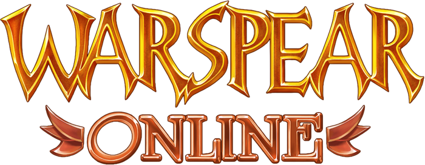

Welcome on the Warspear Online Amping website!
On this website you are able to check your future weapon or armor bonus from +1 to +10 option.
Above this text you can choose which type of item you want to amp and then you are ready to see what bonus you would get.
This data's are 100% firm with official Warspear Online amping percentages!
